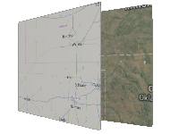

Example of a dynamic change texture, which will draw maps.
Requirement: GUITexture Control
Usage instructions:
Add this script to map GameObject.
Click «Change texture».
Add this script to map GameObject.
Click «Change texture».
ChangeMapTextureExample.cs
/* INFINITY CODE 2013-2016 */
/* http://www.infinity-code.com */
using UnityEngine;
namespace InfinityCode.OnlineMapsExamples
{
[AddComponentMenu("Infinity Code/Online Maps/Examples (API Usage)/ChangeMapTextureExample")]
public class ChangeMapTextureExample : MonoBehaviour
{
// Original texture
private Texture2D texture1;
// Dynamic texture
private Texture2D texture2;
private void ChangeMapTexture()
{
// Change display texture
#if UNITY_4_3 || UNITY_4_5 || UNITY_4_6
GUITexture gt = guiTexture;
#else
GUITexture gt = GetComponent<GUITexture>();
#endif
Texture2D activeTexture = (gt.texture == texture1) ? texture2 : texture1;
gt.texture = activeTexture;
gt.pixelInset = new Rect(activeTexture.width / -2, activeTexture.height / -2, activeTexture.width,
activeTexture.height);
// Change map texture
OnlineMaps.instance.SetTexture(activeTexture);
}
private void OnGUI()
{
// Change texture on button press
if (GUI.Button(new Rect(5, 5, 100, 20), "Change texture"))
{
ChangeMapTexture();
}
}
private void Start()
{
#if UNITY_4_3 || UNITY_4_5 || UNITY_4_6
GUITexture gt = guiTexture;
#else
GUITexture gt = GetComponent<GUITexture>();
#endif
// Get original texture
texture1 = (Texture2D) gt.texture;
// Create new dynamic texture
texture2 = new Texture2D(512, 256, TextureFormat.RGB24, false);
// Add double click on map event
OnlineMapsGUITextureControl.instance.OnMapDoubleClick += ChangeMapTexture;
gt.pixelInset = new Rect(texture1.width / -2, texture1.height / -2, texture1.width, texture1.height);
}
}
}